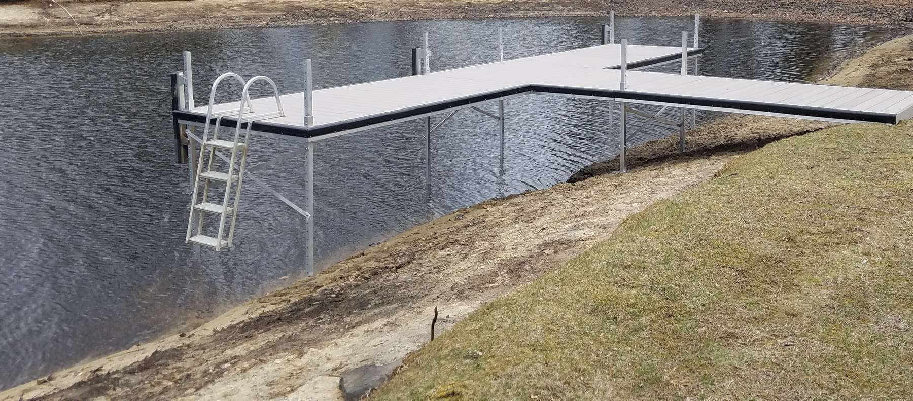
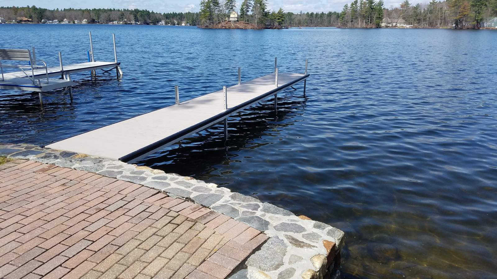
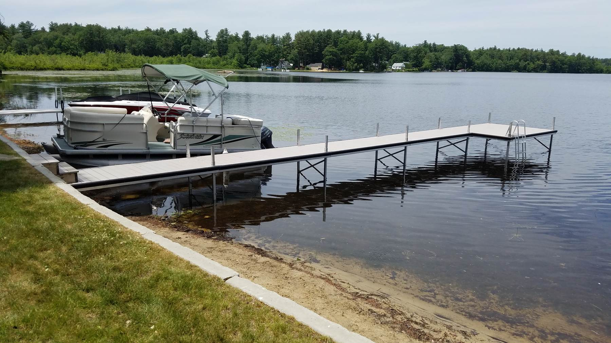
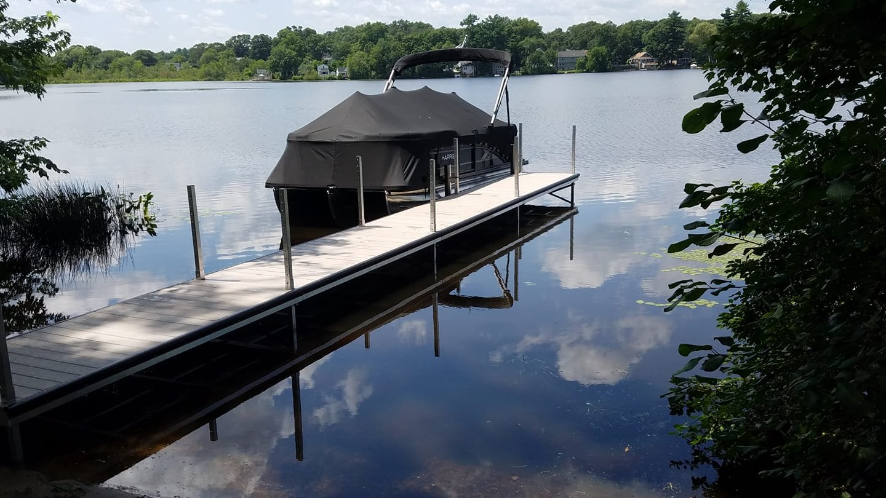
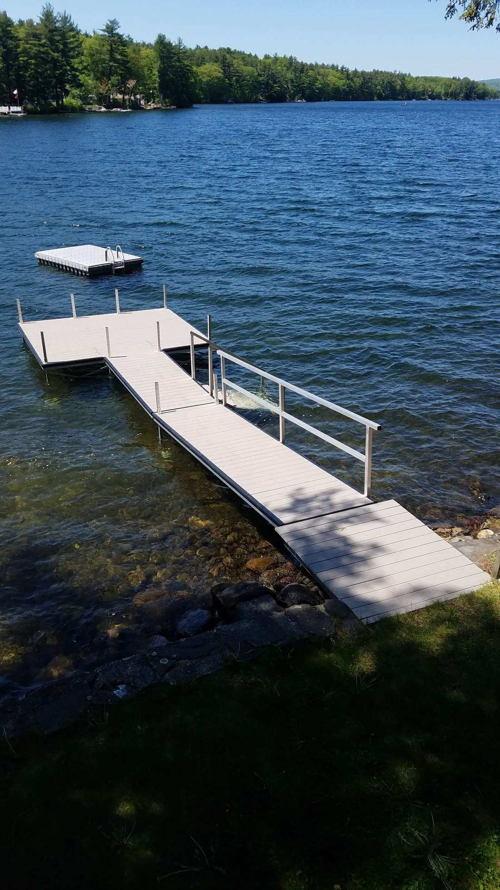

Aluminum docks. Long-lasting composite decking.
Sold direct — planned around your shoreline, not pulled off a shelf.
Sold direct to lake owners
For your waterfront
Each dock uses an aluminum frame with long-lasting composite decking underfoot. Layouts can be a straight run, a T or L, or a platform. Railings, swim stairs, and ladders can be part of the plan. We can install in the spring and remove in the fall.
Options
How a Dock Pro dock comes together
Decking comes in a range of tones, and posts can be finished with vinyl caps.

Tan tones

Redwood tones

White vinyl post caps
Layouts and features
Straight, T, or L — plus the details that make it yours

Aluminum railing and swim stairs

T layout

L layout

Straight run





Want a dock for your lake?
Share a few details about your shoreline and how you use it. We will follow up with you.